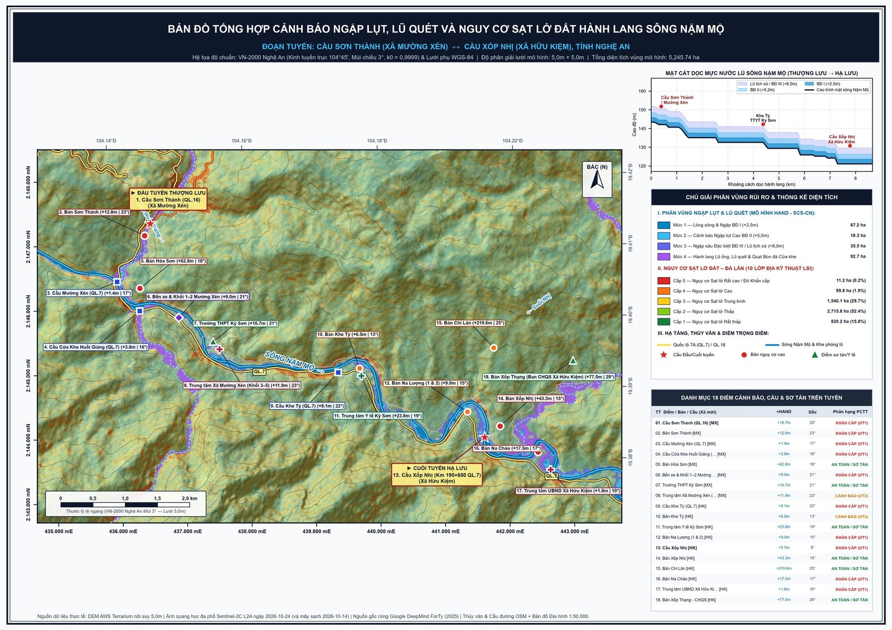
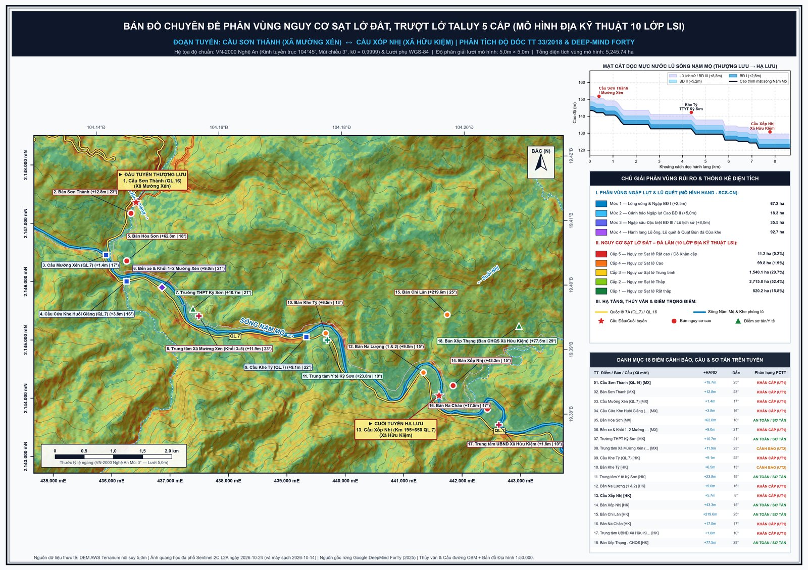
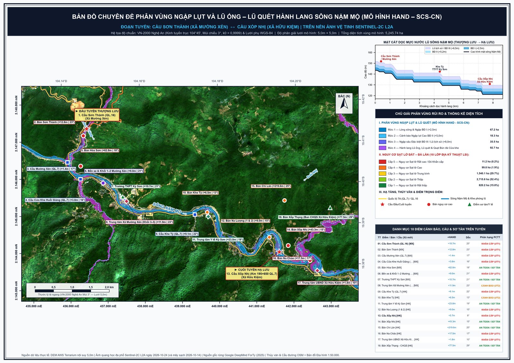
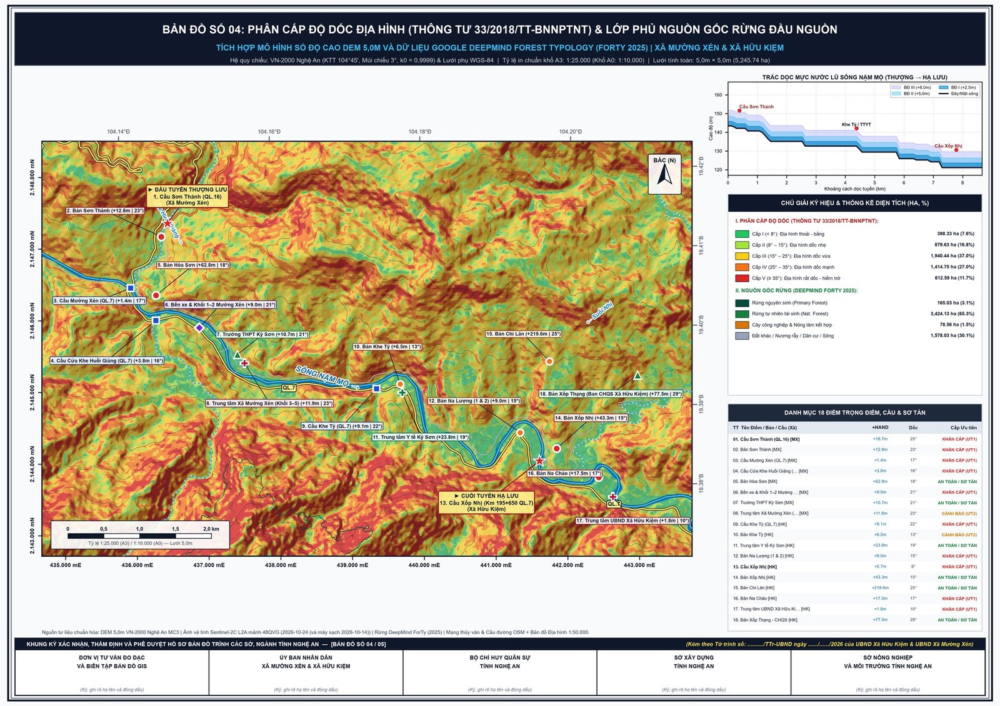
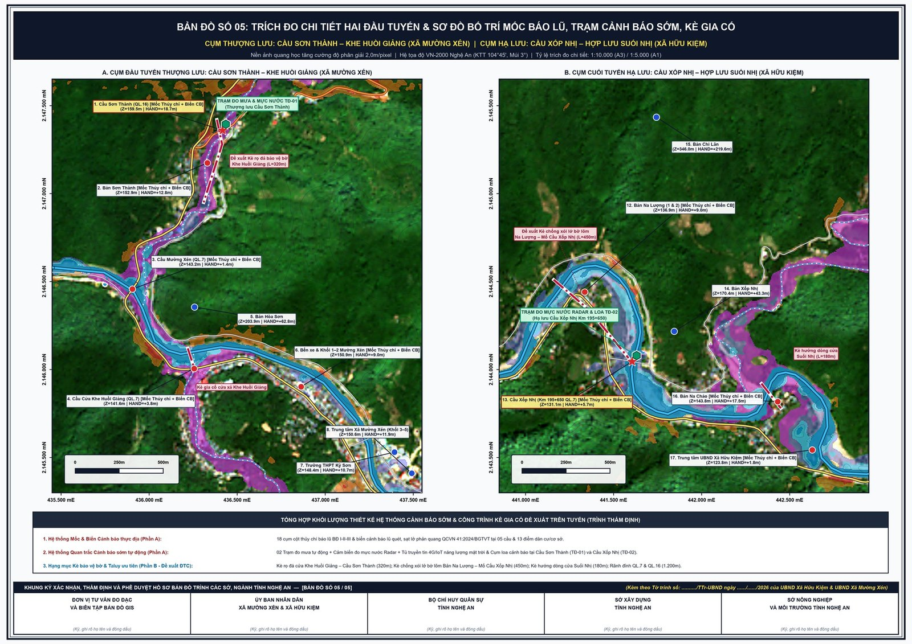
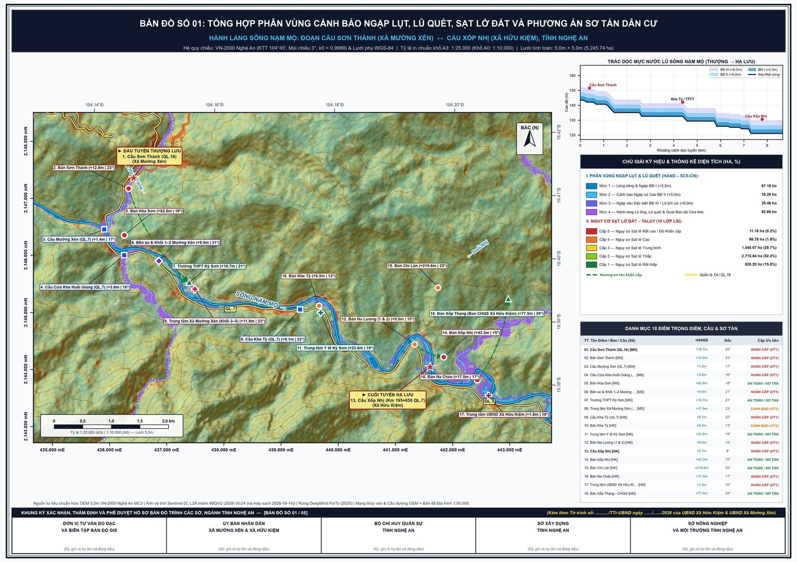
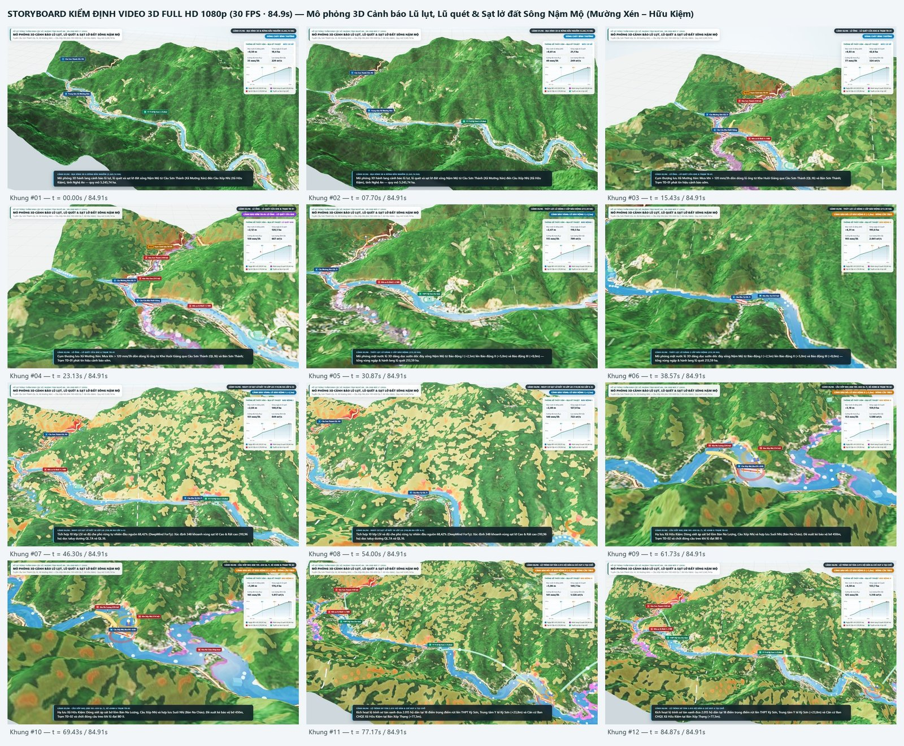

01 Từ ký ức lũ dữ Khe Huồi Giảng đến “Tấm khiên số” giữa đại ngàn
Người dân vùng biên viễn Kỳ Sơn (tỉnh Nghệ An) vẫn chưa thể nào quên rạng sáng định mệnh ngày 02/10/2022. Sau trận mưa cực đoan dồn dập ở thượng nguồn, hàng trăm nghìn mét khối bùn đá từ khe suối hẹp có độ dốc lòng suối vượt trên 35° tại Khe Huồi Giảng đã bất ngờ đổ ập xuống Bản Sơn Thành, Bản Hòa Sơn và trung tâm thị trấn Mường Xén (nay là Xã Mường Xén). Chỉ trong vài chục phút, dòng lũ ống – lũ quét hung hãn đã cuốn trôi nhà cửa, vùi lấp Quốc lộ 7, Quốc lộ 16 và chia cắt hoàn toàn tuyến huyết mạch lên vùng biên giới.
Với một người cán bộ kỹ thuật lâm nghiệp và bản đồ số gắn bó máu thịt với núi rừng tại Ban Quản lý Rừng phòng hộ Kỳ Sơn, những vết sẹo trượt lở đỏ quạch trên sườn núi sau mỗi mùa mưa bão luôn đặt ra một câu hỏi day dứt: “Làm sao để công nghệ GIS, viễn thám vệ tinh và mô hình toán học không chỉ nằm trong các báo cáo khoa học, mà phải trở thành một tấm bản đồ sống, chỉ đúng từng mái nhà, từng mố cầu có nguy cơ sạt lở hay ngập lũ trước khi thiên tai ập tới?”
Từ trăn trở ấy, công trình “Hệ thống WebGIS và Bản sao số 3D (Digital Twin) Cảnh báo sớm Sạt lở đất, Lũ ống – Lũ quét” đã được nghiên cứu, lập trình và triển khai thực chiến trên toàn bộ hành lang Sông Nậm Mộ — đoạn từ Cầu Sơn Thành (QL.16 vượt Khe Huồi Giảng, Xã Mường Xén) đến Cầu Xốp Nhị (Km 195+650 QL.7, Xã Hữu Kiệm), với chiều dài trục thung lũng chính 8,5 km (mạng lưới sông suối khảo sát 21,5 km) và diện tích tự nhiên 5.245,74 ha.


02 Đột phá 1: Giải bài toán Sạt lở đất bằng Mô hình Địa kỹ thuật 10 lớp LSI trên lưới mịn 5 mét
Hầu hết các bản đồ phân vùng sạt lở trước đây thường sử dụng lưới độ cao số (DEM) thô từ 30m đến 90m ở tỷ lệ nhỏ, khiến một sườn đồi bị cắt xẻ taluy dựng đứng sát nhà dân bị “làm phẳng” trên mô hình. Để khắc phục triệt để hạn chế này, hệ thống WebGIS do tác giả xây dựng đã nội suy có hướng địa hình (Topo-to-Raster) về độ phân giải siêu mịn 5,0m × 5,0m trên hệ quy chiếu phẳng VN-2000 Múi chiếu 3° (Kinh tuyến trục 104°45' tỉnh Nghệ An, hệ số biến dạng k0 = 0,9999), bao quát dải cao độ từ 116,4 m (hạ lưu Cầu Xốp Nhị) đến đỉnh núi 1.108,2 m.
Trái tim của phân hệ cảnh báo trượt lở là thuật toán Chỉ số Nhạy cảm Sạt lở đất đa tiêu chí 10 lớp (10-Layer Landslide Susceptibility Index – LSI) theo phương pháp Phân tích Thứ bậc mờ (Fuzzy-AHP), kết hợp chặt chẽ quy chuẩn lâm nghiệp (Thông tư 33/2018/TT-BNNPTNT) với viễn thám quang học đa phổ Sentinel-2C L2A (thu nhận ngày 17/02/2026, độ phủ mây 0,04%) và trí tuệ nhân tạo Google DeepMind Forest Typology (ForTy 2025):
LSI = 0,26·F_Slope + 0,12·F_TPI_TRI + 0,12·F_TWI + 0,12·F_RoadCut + 0,10·F_StreamToe + 0,10·F_NDVI_ForTy + 0,06·F_NDMI + 0,04·F_Aspect + 0,04·F_Elev + 0,04·F_Rain
| TT | Lớp nhân tố trong mô hình LSI | Trọng số | Nguồn dữ liệu & Cơ chế vật lý gây trượt lở |
|---|---|---|---|
| 01 | Độ dốc sườn (Slope Horn °) | 26% | DEM 5m chuẩn Thông tư 33/2018/TT-BNNPTNT. Độ dốc trung bình toàn vùng đạt 23,61°; sườn 25°–45° là đới phát sinh lực cắt trượt mạnh nhất. |
| 02 | Độ cong địa hình & Độ gồ ghề (TPI / TRI) | 12% | Nhận diện sườn lõm tụ thủy ngầm (họng phễu sạt lở) và vách sườn lồi phong hóa nứt nẻ. |
| 03 | Chỉ số ẩm địa hình (TWI = ln(As/tanβ)) | 12% | Mô phỏng áp lực nước lỗ rỗng tăng vọt làm suy giảm lực dính kết đất đá (c') khi mưa kéo dài. |
| 04 | Cắt xẻ chân taluy đường (QL.7 & QL.16) | 12% | Buffer 0–60m từ mép đào taluy dương. Phản ánh hiện tượng mất chân khống chế cơ học dọc các tuyến quốc lộ độc đạo. |
| 05 | Xâm thực chân bờ sông, khe suối | 10% | Buffer 0–50m dọc sông Nậm Mộ, Khe Huồi Giảng, Khe Tỳ, Suối Nhị bị dòng chảy lũ xoáy sâu hàm ếch. |
| 06 | Độ che phủ thực vật & Nguồn gốc rừng (NDVI + ForTy) | 10% | Vệ tinh Sentinel-2C L2A (NDVI trung bình 0,819) kết hợp AI Google DeepMind ForTy đánh giá độ bền neo giữ đất của bộ rễ rừng tự nhiên. |
| 07 | Chỉ số độ ẩm thực bì – đất mặt (NDMI) | 06% | Kênh hồng ngoại sóng ngắn SWIR (B8A – B11) phát hiện các đới đất bão hòa nước ngầm trước bão. |
| 08 | Hướng phơi sườn đón gió ẩm (Aspect) | 04% | Sườn đón mưa dông địa hình và bức xạ nhiệt gây phong hóa vật lý – hóa học sâu trên nền đá phiến – granit. |
| 09 | Phân tầng cao độ phong hóa (Elevation) | 04% | Đới cao độ 180m – 650m có vỏ phong hóa dày từ 3m – 12m, dễ trượt mảng lớn khi bão hòa nước. |
| 10 | Hệ số kích hoạt mưa cực đoan (R3h, R24h) | 04% | Kịch bản mưa lớn cục bộ vượt ngưỡng 100–200 mm/3h tại các phễu tụ thủy sườn cao. |
Kết quả tính toán tự động đã bóc tách toàn vùng thành 5 cấp nguy cơ trượt lở với 1.198 đa giác vector. Trong đó, hệ thống định vị chính xác 239 khoanh vùng Nguy cơ Cao – Cấp 4 (diện tích 99,78 ha, chiếm 1,92%) và 109 khoanh vùng Nguy cơ Rất cao / Đỏ khẩn cấp – Cấp 5 (diện tích 11,18 ha, chiếm 0,22%) tập trung dọc vách taluy dương QL.7 (đoạn Khối 1 Mường Xén đi Bản Na Chảo – Na Lượng – Khe Tỳ – Đỉnh Gió) và sườn dốc Khe Huồi Giảng trên tuyến QL.16.


03 Đột phá 2: Thuật toán Thủy lực “Mặt thoát nước nghiêng” HAND – SCS-CN xóa bỏ sai số mặt nước phẳng
Một bài toán hóc búa của ngành thủy văn miền núi là độ chênh cao đáy sông rất lớn: dọc 8,5 km sông Nậm Mộ từ thượng lưu Cầu Sơn Thành về hạ lưu Cầu Xốp Nhị, cao độ đáy sông chênh nhau hàng chục mét, còn các nhánh suối phụ như Khe Huồi Giảng, Khe Tỳ, Suối Nhị đổ từ độ cao trên 900m xuống đáy thung lũng ~140m. Nếu sử dụng mô hình ngập lụt mặt phẳng ngang truyền thống (Flat-Water bathtub model), khi dâng nước ở hạ lưu lên +5m thì thượng lưu vẫn khô cạn, hoặc khi ngập tới thượng lưu thì hạ lưu đã chìm sâu hàng chục mét dưới nước ảo.
Để giải quyết triệt để điểm nghẽn này, tác giả đã lập trình thuật toán HAND (Height Above Nearest Drainage – Độ cao tương đối so với đường thoát nước gần nhất) kết hợp mô hình dòng chảy mặt SCS Curve Number (NRCS) và cây tìm kiếm không gian cKDTree:
Z_water(x, y) = Z_drainage_base(x, y) + ΔH_stage | H_inundation(x, y) = max(0, ΔH_stage − HAND(x, y))
Nhờ mặt nước 3D tự động uốn nghiêng bám sát cao độ đáy từng đoạn sông Nậm Mộ và từng nhánh khe suối, hệ thống đã khoanh định chính xác 160 vùng nguy cơ thủy văn (tổng diện tích 213,59 ha) chia làm 4 phân cấp tác chiến rõ rệt:
- Mức 1 – Vùng ngập thường xuyên (Báo động I, ΔH ≤ +2,5m): Diện tích 67,18 ha (28 đa giác), bao gồm bãi bồi thấp và chân kè dọc sông Nậm Mộ.
- Mức 2 – Vùng ngập cao (Báo động II, ΔH = +2,5m đến +5,0m): Diện tích 18,29 ha (31 đa giác), bắt đầu uy hiếp thềm dân cư ven sông tại Khối 1, Khối 2 Mường Xén và hạ lưu Bản Na Lượng.
- Mức 3 – Vùng ngập sâu đặc biệt (Báo động III / Lũ lịch sử, ΔH = +5,0m đến +8,0m): Diện tích 35,46 ha (42 đa giác), tái hiện sát thực kịch bản nước dâng khi mưa lớn cực đoan kết hợp xả lũ hồ thủy điện thượng nguồn.
- Mức 4 – Hành lang Lũ ống, Lũ quét & Quạt phóng bùn đá cửa khe: Diện tích 92,66 ha (59 đa giác), nhận diện chính xác các cổ họng phễu Khe Huồi Giảng (Bản Sơn Thành – Hòa Sơn), Khe Tỳ và Suối Nhị có chỉ số
SPIcao, nơi dòng bùn đá vận tốc lớn phóng thẳng ra thềm sông Nậm Mộ.
04 Đột phá 3: Lá chắn sinh thái của 3.589 ha rừng tự nhiên đầu nguồn dưới lăng kính AI Google DeepMind
Điểm mang đậm dấu ấn nghề nghiệp của người cán bộ Ban Quản lý Rừng phòng hộ Kỳ Sơn trong công trình WebGIS này chính là sự kết hợp nhuần nhuyễn giữa Quy hoạch Lâm nghiệp và Địa kỹ thuật Phòng chống thiên tai. Lần đầu tiên tại cấp xã miền núi, bộ dữ liệu trí tuệ nhân tạo toàn cầu Google DeepMind Forest Typology (ForTy v1 – 2025, 10m) được tích hợp cùng phân cấp độ dốc chuẩn Thông tư 33/2018/TT-BNNPTNT ngay trong lõi hệ thống cảnh báo.
Số liệu giải đoán trên toàn lưu vực 5.245,74 ha cho thấy một bức tranh sinh thái vô cùng giá trị: 68,42% diện tích lưu vực (tương đương 3.589,16 ha) là rừng tự nhiên nguyên sinh và thứ sinh phục hồi tốt ở đai cao trên 500m, với chỉ số thực vật trung bình đạt NDVI = 0,819; tiếp theo là 1.169,80 ha (22,30%) rừng trồng và cây gỗ tái sinh, cùng 486,78 ha (9,28%) đất trống, nương rẫy, hành lang giao thông, dân cư và mặt nước.


05 Từ Sa bàn 3D WebGL chạy Offline 100% đến Phương án Tác chiến Sơ tán dân “4 Tại chỗ”
Thực tế chỉ huy phòng chống thiên tai ở vùng cao Kỳ Sơn cho thấy: ngay khi mưa lũ lớn xảy ra, lưới điện 35kV và đường truyền cáp quang viễn thông thường bị đứt gãy đầu tiên. Nếu một phần mềm WebGIS đòi hỏi phải có máy chủ đám mây hay kết nối mạng 4G mới mở được bản đồ thì sẽ hoàn toàn tê liệt đúng vào “giờ vàng” cứu hộ.
Thấu hiểu điều đó, tác giả đã kiến trúc toàn bộ Hệ thống Bản đồ số WebGIS 2D và Sa bàn Địa hình 3D (dựng trên nhân đồ họa Three.js r160 WebGL) đóng gói gọn trong một tệp HTML độc lập duy nhất, vận hành Offline 100% không cần Internet. Ngay tại sở chỉ huy hiện trường, lãnh đạo UBND xã, Ban Chỉ huy Phòng thủ dân sự hay cán bộ Kiểm lâm chỉ cần mở tệp bản đồ trên máy tính xách tay:
- Thanh trượt mô phỏng lũ dâng thời gian thực (0m → 12m): Khi kéo thanh trượt mực nước dâng theo từng nấc Báo động I (+2,5m), Báo động II (+5,0m), Báo động III (+8,0m) đến cực đại +12m, mặt nước 3D dâng lên tới đâu, hệ thống lập tức điểm danh những cụm dân cư, mố cầu nào bị ngập tới đó.
- Kiểm định định lượng 18 điểm trọng điểm & Ghép cặp sơ tán “4 tại chỗ”: Hệ thống đo chính xác độ cao tương đối
HANDvà độ dốcP90cho từng bản làng, ghép cặp trực tiếp từng khu dân cư nguy hiểm với điểm sơ tán an toàn tuyệt đối gần nhất.
| Mã | Điểm dân cư / Công trình trọng điểm | Quy mô bảo vệ | Thông số địa kỹ thuật (HAND / Độ dốc) | Phân cấp & Đích sơ tán an toàn “4 tại chỗ” |
|---|---|---|---|---|
| DC-01 | Bản Sơn Thành (Xã Mường Xén – Cửa Khe Huồi Giảng) | 148 hộ (~650 nhân khẩu) | Cao độ 194,2m • HAND +1,8m • Dốc P90: 29,6° | CẤP 5 – ĐỎ KHẨN CẤP Sơ tán ngay khi mưa >100mm/3h về Trường THPT Kỳ Sơn (+10,7m) & Trung tâm Y tế Kỳ Sơn (+23,8m). |
| DC-02 | Bến xe & Khu dân cư Khối 1–2 (Xã Mường Xén) | 185 hộ (~780 nhân khẩu) | Cao độ 156,0m • HAND +2,4m • Sát bờ phải sông Nậm Mộ | CẤP 4 – NGUY CƠ CAO Di dời tài sản, phương tiện lên Trụ sở UBND Xã Mường Xén (+14,2m) và THPT Kỳ Sơn khi lũ đạt BĐ II. |
| DC-05 | Bản Na Chảo (Xã Hữu Kiệm – Ven QL.7) | 195 hộ (~840 nhân khẩu) | Cao độ 166,4m • HAND +4,2m • Sườn taluy dốc 33,1° | CẤP 5 – SẠT LỞ TALUY QL.7 Sơ tán các hộ sát chân taluy dương QL.7 lên điểm cao Bản Hòa Sơn (+62,8m). |
| DC-06 | Bản Na Lượng 1 & 2 (Xã Hữu Kiệm) | 226 hộ (~980 nhân khẩu) | Cao độ 148,5m • HAND +1,9m • Dốc sườn P90: 35,8° | CẤP 5 – NGẬP BĐ II & SẠT LỞ Sơ tán theo trục nội bản lên Nhà văn hóa nền cao và căn cứ Bản Xốp Thạng (+77,5m). |
| DC-07 | Bản Khe Tỳ & Cửa Suối Nhị (Xã Hữu Kiệm) | 132 hộ (~580 nhân khẩu) | Cao độ 141,0m • HAND +2,1m • Dốc P90: 32,7° | CẤP 5 – HÀNH LANG LŨ QUÉT Rút toàn bộ hộ dân cửa khe về Trụ sở UBND & Công an Xã Hữu Kiệm (+19,2m). |
| HC-03 | Căn cứ Ban CHQS Xã Hữu Kiệm (Bản Xốp Thạng) | Sở chỉ huy & Hậu cần cứu hộ | Cao độ 228,4m • HAND +77,5m • Nền địa chất ổn định | ĐIỂM AN TOÀN TUYỆT ĐỐI Trung tâm chỉ huy hiệp đồng lực lượng, tập kết lương thực, xuồng cứu hộ và thông tin liên lạc. |


06 Khát vọng nhân rộng Gói kỹ thuật số hóa Tự hành tới 34 tỉnh, thành phố trên toàn quốc
Không chỉ dừng lại ở các bản đồ số và sa bàn 3D, công trình còn đề xuất đồng bộ hệ thống giải pháp công trình và phi công trình sát thực tế ngân sách địa phương: lắp đặt 08 cột thủy chí báo lũ sơn phản quang tại mố các cầu trọng yếu, cắm 22 biển cảnh báo sạt lở – lũ quét chuẩn QCVN 41:2024/BGTVT, xây dựng 02 trạm đo mưa – mực nước Radar tự động 4G/IoT dùng năng lượng mặt trời (TĐ-01 tại thượng lưu Cầu Sơn Thành và TĐ-02 tại hạ lưu Cầu Xốp Nhị), kết hợp gia cố 950m kè rọ đá/bê tông cốt thép bảo vệ chân mố cầu và 1.200m rãnh cơ thu nước đỉnh taluy dương QL.7 với tổng khái toán đầu tư giai đoạn 2026–2030 chỉ 25,08 tỷ đồng (mang lại hiệu quả kinh tế – xã hội ròng ước đạt trên 95 tỷ đồng và bảo vệ an toàn tính mạng cho hơn 8.600 người dân).
Đặc biệt hơn cả, từ thành công thực tiễn tại hành lang Sông Nậm Mộ (Kỳ Sơn, Nghệ An) và điểm nóng Cầu Ông Cùng – QL.8C (Xã Sơn Giang – Xã Sơn Tiến), tác giả đã chuẩn hóa và đóng gói toàn bộ quy trình thành Gói Kỹ thuật AI-GIS Tự hành Toàn quốc (Portable Nationwide Skill Package). Bộ công cụ tích hợp sẵn bảng tra 63 kinh tuyến trục VN-2000 Múi 3° và cấu trúc hành chính Mô hình Chính quyền địa phương 2 cấp (Tỉnh/Thành phố – Xã/Phường) tại 34 tỉnh, thành phố, bám sát tiêu chuẩn của Quyết định số 1262/QĐ-TTg ngày 27/10/2023 của Thủ tướng Chính phủ phê duyệt Đề án Cảnh báo sớm sạt lở đất, lũ quét khu vực miền núi và trung du Việt Nam.
Từ những đêm miệt mài viết từng dòng mã lệnh Python, hiệu chỉnh từng ô lưới địa hình 5 mét giữa núi rừng biên viễn Kỳ Sơn, hệ thống WebGIS cảnh báo sạt lở đất và lũ quét đã minh chứng một điều giản dị mà sâu sắc: Chuyển đổi số không phải là điều gì xa vời nơi đô thị lớn — khi xuất phát từ trái tim và trách nhiệm của người cán bộ bám rừng, bám bản, công nghệ sẽ hóa thành “tấm khiên số” vững chãi canh giữ sự bình yên cho từng mái nhà nơi phên dậu Tổ quốc.